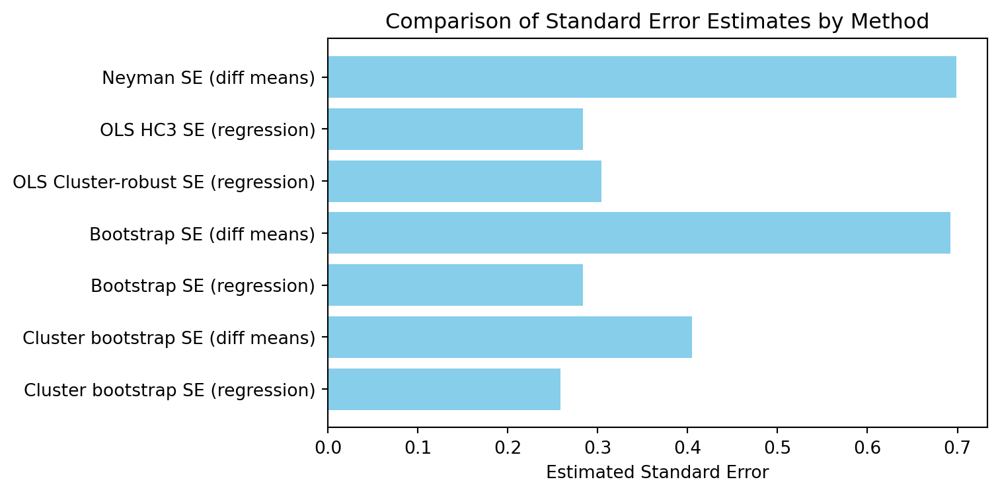

import numpy as np
import pandas as pd
import statsmodels.api as sm
from sklearn.utils import resample
np.random.seed(42)
n = 200
n_T = n_C = n // 2
# Simulate covariate and outcome
df = pd.DataFrame({
'T': np.repeat([1, 0], [n_T, n_C]),
'age': np.random.normal(50, 10, n),
'preY': np.random.normal(0, 1, n)
})
df['Y'] = 2 + 1.5 * df['T'] + 0.5 * df['age'] + 0.8 * df['preY'] + np.random.normal(0, 2, n)
df['school_id'] = np.random.choice([1,2,3,4], size=n) # for clusteringRCT Standard Errors
RCT
Standard Errors
Practical guide to choosing and interpreting standard error methods in RCTs: Neyman, HC3, cluster-robust, bootstrap, and randomisation inference. Includes code, guidance, and when to use each approach.
1 Setup
- Two-arm RCT with \(n_T\) treated and \(n_C\) control units.
- Let \(\bar Y_T,\; s_T^{2}\) and \(\bar Y_C,\; s_C^{2}\) denote sample means and variances.
- The estimated effect is \(\hat{\Delta} = \bar Y_T - \bar Y_C .\)
Y_T = df.loc[df['T']==1, 'Y']
Y_C = df.loc[df['T']==0, 'Y']
mean_T = Y_T.mean()
mean_C = Y_C.mean()
var_T = Y_T.var(ddof=1)
var_C = Y_C.var(ddof=1)
delta_hat = mean_T - mean_C
print(f"Mean (Treated): {mean_T:.3f}")
print(f"Mean (Control): {mean_C:.3f}")
print(f"Variance (Treated): {var_T:.3f}")
print(f"Variance (Control): {var_C:.3f}")
print(f"Estimated Effect (Delta): {delta_hat:.3f}")Mean (Treated): 27.921
Mean (Control): 26.966
Variance (Treated): 24.378
Variance (Control): 24.434
Estimated Effect (Delta): 0.9542 Neyman analytical standard error
\[ \widehat{\operatorname{Var}}_{\text{Neyman}}\!\bigl(\hat{\Delta}\bigr) = \frac{s_T^{2}}{n_T} + \frac{s_C^{2}}{n_C}. \]
- Exact under simple random assignment. If the assignment is not simple random (e.g., clustered, stratified, or otherwise dependent), this formula may underestimate or misestimate the true variance.
- Ignores covariates; best for large, clean designs.
- In smaller samples, or if covariates are strongly related to the outcome, adjusting for covariates (e.g., via regression) can increase precision (reduce standard errors).
Y_T = df.loc[df['T']==1, 'Y']
Y_C = df.loc[df['T']==0, 'Y']
s2_T = Y_T.var(ddof=1)
s2_C = Y_C.var(ddof=1)
se_neyman = np.sqrt(s2_T/n_T + s2_C/n_C)
print(f"Neyman SE: {se_neyman:.3f}")Neyman SE: 0.6993 OLS with HC2/HC3 (“robust”)
Run OLS of \(Y\) on treatment \(T\) and any baseline covariates \(X\); report HC3 SEs.
X = sm.add_constant(df[['T', 'age', 'preY']])
model = sm.OLS(df['Y'], X).fit(cov_type='HC3')
se_hc3 = model.bse['T']
print(f"OLS HC3 SE: {se_hc3:.3f}")OLS HC3 SE: 0.284- HC3 handles heteroskedasticity.
- Equals Neyman when the model is saturated (the regression only includes treatment (no covariates), robust SE = Neyman SE.)
To show this second point, we fit a regression of \(Y\) on \(T\) only (no covariates), compute the robust (HC3) standard error for the treatment effect, and compare it to the Neyman standard error. The results below confirm that the two are equal:
OLS HC3 SE (T only): 0.702177
Neyman SE: 0.698658
Difference: 3.519708e-034 Cluster-robust standard errors
Needed when assignment or outcomes cluster (e.g., classrooms, markets).
In terms of the model, clustering means that the error terms are correlated within groups (clusters):
\[ \operatorname{Cov}(\epsilon_{ij},\; \epsilon_{i'j}) > 0 \quad \text{for} \quad i \neq i', \text{ within the same cluster } j, \]
That is, individuals in the same cluster share unobserved factors, so their errors are not independent.
Cluster-robust standard errors are usually larger than conventional (non-clustered) standard errors. When there is strong intra-cluster correlation, the estimated SEs can be much larger, reflecting the reduced effective sample size due to the similarity of outcomes within clusters.
model_cluster = sm.OLS(df['Y'], X).fit(cov_type='cluster', cov_kwds={'groups': df['school_id']})
se_cluster = model_cluster.bse['T']
print(f"Cluster-robust SE: {se_cluster:.3f}")Cluster-robust SE: 0.3045 Bootstrap
5.1 Simple bootstrap
Resample individuals with replacement; compute \(\hat{\Delta}\) each time; use the empirical standard deviation.
# Bootstrap for regression SE
boot_ests_reg = []
# Bootstrap for simple difference in means
boot_ests_diff = []
for _ in range(1000):
boot = resample(df)
# Regression bootstrap
Xb = sm.add_constant(boot[['T', 'age', 'preY']])
mb = sm.OLS(boot['Y'], Xb).fit()
boot_ests_reg.append(mb.params['T'])
# Simple difference in means bootstrap
Y_Tb = boot.loc[boot['T']==1, 'Y']
Y_Cb = boot.loc[boot['T']==0, 'Y']
boot_ests_diff.append(Y_Tb.mean() - Y_Cb.mean())
se_boot_reg = np.std(boot_ests_reg, ddof=1)
se_boot_diff = np.std(boot_ests_diff, ddof=1)
print(f"Bootstrap SE (regression): {se_boot_reg:.3f}")
print(f"Bootstrap SE (difference in means): {se_boot_diff:.3f}")Bootstrap SE (regression): 0.284
Bootstrap SE (difference in means): 0.6925.2 Cluster bootstrap
Resample clusters to respect dependence.
n_boot = 1000
boot_ests_cluster_reg = [] # Regression-based
boot_ests_cluster_diff = [] # Difference in means
clusters = df['school_id'].unique()
for _ in range(n_boot):
sampled_clusters = np.random.choice(clusters, size=len(clusters), replace=True)
boot = pd.concat([df[df['school_id'] == cid] for cid in sampled_clusters], ignore_index=True)
# Regression-based cluster bootstrap
Xb = sm.add_constant(boot[['T', 'age', 'preY']])
mb = sm.OLS(boot['Y'], Xb).fit()
boot_ests_cluster_reg.append(mb.params['T'])
# Difference in means cluster bootstrap
Y_Tb = boot.loc[boot['T'] == 1, 'Y']
Y_Cb = boot.loc[boot['T'] == 0, 'Y']
if len(Y_Tb) > 0 and len(Y_Cb) > 0:
boot_ests_cluster_diff.append(Y_Tb.mean() - Y_Cb.mean())
se_boot_cluster_reg = np.std(boot_ests_cluster_reg, ddof=1)
se_boot_cluster_diff = np.std(boot_ests_cluster_diff, ddof=1)
print(f"Cluster bootstrap SE (regression): {se_boot_cluster_reg:.3f}")
print(f"Cluster bootstrap SE (difference in means): {se_boot_cluster_diff:.3f}")Cluster bootstrap SE (regression): 0.259
Cluster bootstrap SE (difference in means): 0.4056 Randomisation inference
Randomisation inference is a nonparametric method that uses the known assignment mechanism of an experiment to test hypotheses. It is exact under the randomisation used, making no assumptions about outcome distributions.
Under the null hypothesis (no treatment effect), outcomes would be equally likely under any possible assignment of treatment labels. Shuffle (permute) the treatment labels many times, each time calculating the test statistic (e.g., difference in means). The p-value is the proportion of shuffled assignments where the statistic is as extreme or more extreme than observed.
This method provides exact p-values, even in small samples or with unusual outcome distributions. It is useful for non-standard estimands (like medians) or complex assignment mechanisms.
# Randomisation inference example: calculate p-value for treatment effect
np.random.seed(42)
reps = 5000
y = df['Y'].values
T = df['T'].values
obs = np.mean(y[T==1]) - np.mean(y[T==0])
more_extreme = 0
for _ in range(reps):
shuffled = np.random.permutation(T)
diff = np.mean(y[shuffled==1]) - np.mean(y[shuffled==0])
if abs(diff) >= abs(obs):
more_extreme += 1
pval = more_extreme / reps
print(f"Randomisation inference p-value: {pval:.4f}")Randomisation inference p-value: 0.17527 Bayesian Estimates of Standard Error
Bayesian methods provide an alternative approach to uncertainty quantification in RCTs by estimating the full posterior distribution of treatment effects, rather than relying solely on standard errors from frequentist estimators. In the Bayesian framework, uncertainty is typically summarized using credible intervals (e.g., the 95% credible interval), which represent the range within which the true effect lies with a specified probability, given the data and prior.
How it works: - Specify a likelihood for the data and a prior distribution for the parameters (e.g., treatment effect). - Use Bayes’ theorem to compute the posterior distribution of the treatment effect. - The standard deviation of the posterior distribution can be interpreted as a Bayesian analogue to the standard error. - The 95% credible interval is often reported instead of (or alongside) a standard error.
When to use: - When you want to incorporate prior information or beliefs about the treatment effect. - For small samples, complex models, or when the likelihood is not well-approximated by standard frequentist assumptions. - When you want a direct probabilistic interpretation of uncertainty (e.g., “there is a 95% probability the effect lies in this interval”).
Example (conceptual): - Fit a Bayesian regression model (e.g., using PyMC or Stan) for the treatment effect. - Summarize the posterior with its mean and standard deviation (Bayesian SE), and report the 95% credible interval.
Note: - Bayesian credible intervals and standard errors depend on the choice of prior and model specification. - In large samples with non-informative priors, Bayesian and frequentist intervals often agree.
8 Summary of Standard Error and Inference Methods
Below is a summary of the main methods for estimating standard errors or p-values in RCT analysis, with their calculated values (from the code above) and guidance on when to use each. After running the code, copy the printed results into the table below.

| Method | When to Use |
|---|---|
| Neyman analytical SE (diff means) | Classic, large RCTs with simple randomisation; no covariates; outcomes i.i.d. |
| OLS HC3 robust SE (regression) | Any RCT with covariates; robust to heteroskedasticity; default for most regression analyses |
| OLS Cluster-robust SE (regression) | Assignment or outcomes clustered (e.g., by school, clinic); regression with covariates |
| Bootstrap SE (diff means) | Small samples; non-standard estimands (e.g., medians); minimal assumptions |
| Bootstrap SE (regression) | Small samples; regression with covariates; non-standard estimands; minimal assumptions |
| Cluster bootstrap SE (diff means) | Clustered data; small samples; non-standard estimands; minimal assumptions |
| Cluster bootstrap SE (regression) | Clustered data; regression with covariates; robust to cluster structure and small samples |